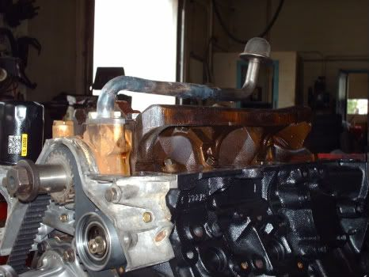
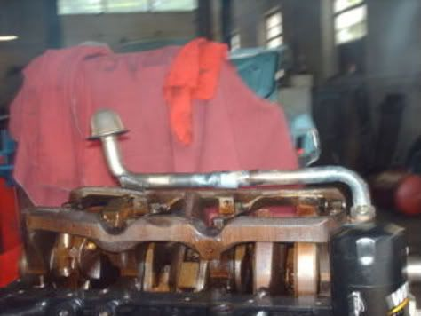
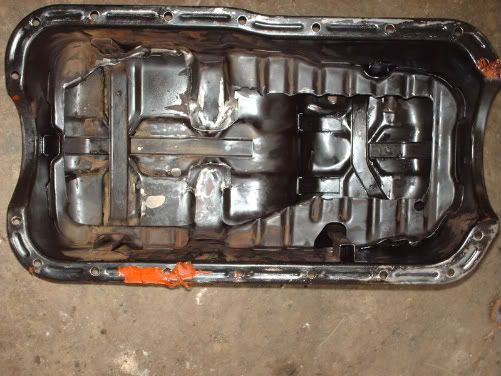
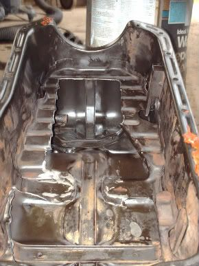
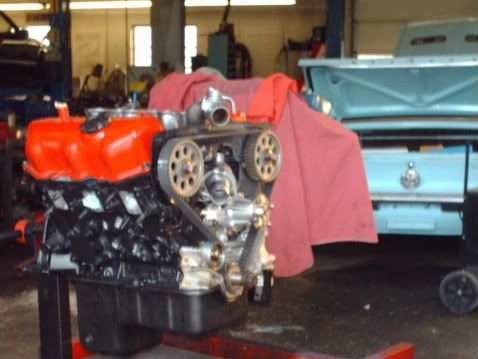

-
OK short and simple
- pathfinder VG33E crank + oil pump
- Z31 VG30E oil sump
- Z31 VG30ET oil pan
I've tried heating and shaping the sump to work, but the slosh pans are keeping the plan from working. Any one with VG33E exp. found a sump that will work, short of cutting out the slosh pans? -
I have no experience with this application but, if you do have to pull the baffles, you could always run a crank scraper to help things out.85 Z31 6.0 LSX turbo 766whp/792wtq
04 GTO, LS6, big cam, porting, N20… underway for summertime daily driver. -
Well I'll cutting the pans out, if they're left in the crank weights will hit the sump tube even after reshaping for clerance
I'll post pics mid-week for refrence for any 3.3 swappers -
here are some pics and details
First off the Z31 sump tube and 3.3 oil pump. In its original form the Z31's sump is designed to travel from the outside and curve in then down to the lowest part of the pan at the rear. The 3.3's oil pump has the sump tube connected more towards the middle, a higher mounting position, and its tube (in most variations*) is short forming a S shape as they draw from the front of the 3.3's original pan*
Modifying the Z31 sump tube. (this is all relative to the pan modifications and many test fits) first thing I did was remove the tabs that bolt onto the lower girdle, heated the curve and hammered it straight, then heated the front curve near the tube/pump mating flange and took it down because as mentioned, the mounting position on the 3.3's oil pump is higher, I also had to bring the pick up side more towards the rear, almost bringing the pickup to the rear of the pan. Too add on watch the crank weights so they don't hit the tube. Heating the tube causes the carbon build up to flake off, keep the pickup side higher up and blow it through to get the flakes out


Modifying the Z31T oil pan. The biggest factor is the front slosh pans, and the cross bar before the rear section. If you look at the Z31T pan you will see the inlays for the original sump tube, all you have to do it follow suit to make way. I didn't want to score the pan too bad so hammering the cross bar tabs down was well in order. Theres really not much to it, the pictures speak for themselfs. Note this is the unfinished test fit product, I highly suggest cleaning up your cuts with a grinder or a file to remove hanging shards, wash the pan very throughly, and blow dry with high PSI air to remove any metal remaining.


and the 3.3 as she sits

Side notes:
1. i could have avoided having to do all this work but saw benefits in the higher PSI the 3.3's oil pump uses
2. make sure you pan is clean! -
Nice job. Are you going to leave the oil filter in the original VG33 location or are you going to relocate?1986 NA - Purchased by me in December 1985
Working on VG33 - NA to Turbo
Tokico Illuminas w/ Eibach Springs
88SS Sways -
yup im keeping the filter mounted to the pump, all im worried about now is the accessory mouting brackets. most of what ive seen puts the alternator on the driver side, which would make turbo inlet piping a bitch

Copyright © 2006–. All rights reserved. Privacy Policy